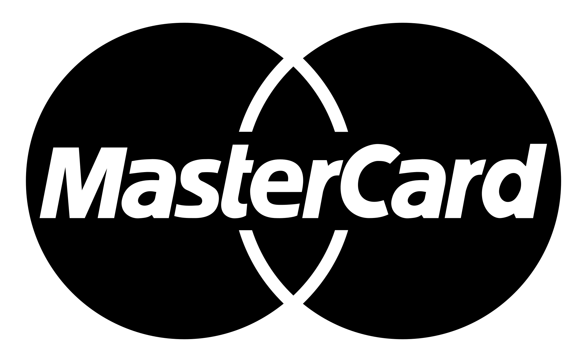

0. Capabilities & previous projects
Private explainer — background and prior work that inform how this project gets researched and built. Longer and more personal than the public "About David Hough" on the website — this stays in the back end.
My story
David moved to Australia at age 8. His family later returned to South Africa, settling in the Groot Marico area near the Botswana border, where they farmed with game — including zebra. That early back-and-forth between countries set the pattern for a genuinely international career: assurance and risk consulting at PwC Australia and Deloitte South Africa, multinational audit work with Philip Morris International across Amsterdam, Switzerland, and its international affiliates, then a Master of Public Health that shifted the lens from "is the control working" to "who is actually affected, and how would they know."
He co-founded One1 Digital, Adelaide-founded, with his sister; she now leads the company day to day, having relocated to the Western Cape in South Africa since most of their clients are in Europe or America. Around the same period, the pattern that defines his recent work took shape — building structured systems that make complex, fragmented information legible to the people it affects, rather than only to the institutions that hold it.
That pattern continued through roughly 18 months based back on the family's Groot Marico property, working independently on research systems and technology concepts — the direct precursor to Sentrix Digital and RiskAtlas. Returning to Melbourne and moving into Fawkner Mansions in September 2026, the same instinct that built RiskAtlas — that good evidence, properly organised, gives people back some control over systems that otherwise run opaque — turned toward the building itself: a heritage-listed property owned by Dr Jeff Nguyen, with almost no public record. Writing this book is that same discipline pointed at a different kind of opacity: not a benefits system this time, but a hundred-plus years of a building's history that nobody has bothered to write down.
An audit-style approach to the book
The book's research applies a standard, textbook evidence-assurance discipline — the same structure used in financial and controls audit work generally, not any specific employer's proprietary methodology:
1. Risk / scope assessment
What's actually knowable about the building, what's unverifiable, and where the biggest gaps in the historical record are likely to be.
2. Evidence gathering
Inspection (archives, records, the building itself), observation (present-day condition and use), and inquiry (residents, heritage bodies, historians) — the three standard evidence-gathering methods.
3. Testing & corroboration
Every claim checked against a primary source where possible; conflicting or unverifiable claims are flagged rather than smoothed over.
4. Reporting
Findings written up so another person could trace any claim back to its source — the same standard applied in §3 Best practice.
Professional background
| PwC Australia | Senior Consultant, Risk Assurance (Dec 2015–2019, Sydney) — portfolio included Commonwealth Bank of Australia, Zurich Financial Services Australia, Citibank Australia, and superannuation/insurance clients, across technology controls, post-implementation reviews, data migration, third-party assurance, AML/KYC, and regulatory attestation. Delivered 16 engagements in one financial year, including a three-month Adelaide secondment covering nine engagements. Completed CISA (ISACA) in June 2017. Prepared reports and evidence-based recommendations for senior stakeholders and coached five direct reports. |
|---|---|
| Philip Morris International | Information Systems Auditor (2019) — multinational assurance work across Amsterdam, Switzerland, and international affiliates: document review, interviews, evidence testing, and translating complex findings for senior stakeholders across professional and cultural boundaries. |
| Deloitte South Africa | Joined 2013 in Technology Advisory and Assurance (IT General Controls testing, Automated Control Reviews, Data Assurance), promoted from Consultant to Senior Consultant. Later returned as Assistant Manager, IT & Specialised Assurance — evidence assessment, controls analysis, engagement planning, and team supervision. Also served as a Western Cape Employment Equity Forum representative. |
| Financial Claims Scheme reporting | Annual controls evaluation and Financial Claims Scheme readiness reporting for Commonwealth Bank of Australia, under APRA's crisis-management framework — senior-stakeholder reporting under a live regulatory framework, not a training exercise. |
| Public health | Master of Public Health, Macquarie University (conferred 17 August 2023, Higher Study Scholarship) — policy design, health law and economics, systems science in healthcare, global health, epidemiology/biostatistics. |
| Business/IT foundation | Bachelor of Business Systems, Bond University (conferred 15 June 2013) — double major in Information Systems and Management, Distinction GPA average, Dean's List, Top Student Award for Business Processes and IT Operations, partial scholarship. City of Gold Coast Open Data capstone: his team's ~100-page report was adopted by the City, which implemented an Open Data Access Project based on its recommendations. Also Vice President, African Students Association Think Tank. |
| Certifications | CISA (ISACA) — no longer active. Microsoft: MCITP, MCTS, MCP, MCSA. |
| One1 Digital contribution | Funding-linked strategy and business-development work, alongside risk-management guidance associated with a reported 20% reduction in risk-related costs. |
Across 40+ assurance and consulting engagements, the consistent thread has been identifying authoritative requirements, locating reliable evidence, and distinguishing fact from assumption — the same discipline this project applies to a building's history instead of a set of financial statements.
Current projects
Sentrix Digital
Founded 2026, Melbourne — "Evidence. Clearer systems. Practical capability." Consulting, research, and digital systems for complex policy, regulatory, and institutional environments — turning evidence, rules, and workflows into clearer decisions and practical tools people can actually use.
RiskAtlas
Source-governance system tracking legislative, regulatory, employment, and policy material across jurisdictions (South Africa and Australia), with a focus on source authority, currency, and auditability over time.
ClaimHub & ClaimBuddy
Tools built around evidence organisation and claimant-authorised visibility — keeping the affected person visible in policy/employment/medical administrative processes.
One1 Digital
Founded 2020, Adelaide — "Your systems shouldn't slow your team down." Co-founded with his sister, Yvette Hough, who now runs it day to day, having relocated to the Western Cape, South Africa, since most clients are in Europe or America. Custom software/automation — CRMs, workflow tools, client portals, integrations — for service-based organisations in education, healthcare, aged care, and community services.
PostNow (postnow.co.za)
Southern African logistics platform — POPIA-compliant regulated document dispatch for banks and law firms, WhatsApp-based courier booking, cross-border duty calculation, and escrow-protected peer-to-peer trading, across South Africa, Botswana, and Namibia, on a shared payment and audit-logging backend.
AfterDuty (afterduty.co.za)
Import cost-comparison tool for South African and Botswanan shoppers — calculates the true landed cost of an overseas purchase (duty, VAT, customs clearance, courier) against a real local listing, so buyers can see whether importing actually saves money.
Throughline
Overall: a researcher, academic, and entrepreneur — a systems thinker who consistently adds value by making complex, fragmented information legible to the people it actually affects. That shows up as a research/evidence discipline (PwC, Deloitte, MPH), as founder or co-founder of several working systems (One1 Digital, PostNow, AfterDuty, Sentrix Digital, RiskAtlas, ClaimHub/ClaimBuddy), and now as the same instinct applied to a heritage-listed building that nobody had bothered to document. A consistent commitment to equity and access runs through all of it — applies equally to a benefits claimant navigating a fragmented system and to a reader trying to understand the history of the building they live in.
Confidential note: this section intentionally does not reproduce any specific employer's proprietary methodology diagrams or internal materials — only generic, industry-standard audit/assurance concepts are used above.
1. Storyboard
The end-to-end narrative arc, shared across the book, the documentary, and the website — each output is a different edit of the same underlying story.
Discovery
Move into a heritage-listed building (11 Sept 2026) and notice it has almost no public documentation despite being the oldest surviving flats in Stonnington.
Research
Victorian Heritage Database, Trove, Stonnington History Centre, PROV, Sands & McDougall directories, land title history — build a verifiable timeline.
Proposal
Pitch the owner, Dr Jeff Nguyen: research + digital preservation, in exchange for a defined rent concession over a fixed period, with checkpoints.
Capture
Photogrammetry/LiDAR scan of exterior and common areas, real dated photography, archive digging, careful present-day observation.
Production
Manuscript, 3D/VR model, documentary edit, website build — all drawing from the same research base.
Release
A5 hardcover via KDP + seeded copies to heritage groups/universities, website live, documentary distributed on YouTube/social.
Legacy
A permanent, dated digital record of the building exists independently of what happens to it physically — plus an ongoing relationship with heritage bodies.
2. Proposal to the Owner
Full working detail lives in docs/project-brief.md —
this is the persuasive version, written to actually be said or sent
to Dr Nguyen. A polished, print-ready version of this same
proposal — the one to actually hand over — is at
docs/proposal.html
(PDF).
The value I bring
An evidence-trained researcher already living in the building is offering to do, essentially for free, work that would otherwise cost the owners real money to commission: professional-grade digital preservation, archival research, and a public-facing history — with an audit-style discipline (see §0) applied to make sure every claim is sourced and defensible, not marketing fluff. On top of the core research and 3D/VR capture, I bring drone piloting and 3D mapping (photogrammetry) skills directly, plus documentary film-making — an interest of mine — so the same capture work produces both the preservation record and a short history documentary, at no extra cost to the owners.
How this creates a legacy
Fawkner Mansions is, on the current evidence, the oldest surviving residential flats in the City of Stonnington and one of the oldest in Victoria — a genuinely rare claim most owners of a 116-year-old building never get the chance to make. This project turns that claim into something permanent: a properly researched book, and a full digital VR (virtual reality) record — a 3D model of the building people can explore, headset or browser, as if walking through it in person — that will still exist and be referenceable by heritage bodies, historians, and the public even if the physical building is ever altered or demolished. Given the building's significance, doing this now, while it still stands largely intact, is a meaningfully time-sensitive opportunity, not a someday project. A well-produced documentary and a genuine "heritage building saved digitally" story is also a plausible media hook — local and potentially international press coverage that promotes the book, the documentary, and Fawkner Mansions itself simultaneously, driving both public interest and book sales. I can also engage directly with universities on the owners' behalf — for research support, and to explore funding or grant support, aligning this with how comparable heritage-documentation projects are normally resourced (see §7).
This isn't hypothetical — a working book cover mockup, an interactive 3D book, and a functioning postcard system already exist as proof of concept (see the links above). Dr Nguyen can be shown something real, not just a description.
Why I'm suited to do it
This isn't a hobbyist project. My background is in assurance and risk research — PwC, Deloitte, Philip Morris International — plus a Master of Public Health that trained a systems-level, evidence-first way of thinking. I've built and run independent research systems (Sentrix Digital, RiskAtlas, ClaimHub/ClaimBuddy) and co-founded three working businesses (One1 Digital, PostNow, AfterDuty). This work already runs through a registered business — Sentrix Digital, with its own ABN and the infrastructure (hosting, domains, development tooling) already in place — so this isn't a standing start or a hobby project without the professional backing to see it through. I already live in the building, so access, motivation, and timeline all line up naturally — this isn't an outside contractor who has to be brought in and briefed. See §0 for the full background.
Timing matters too: I'm starting a PhD in mid-2027, which gives me a genuine, bounded window of real capacity right now to commit to this properly — not an open-ended promise, but a defined window where I'm actively looking for exactly this kind of project. I believe this is a once-in-a-lifetime opportunity for both of us: a rare, well-documented heritage building and a researcher with the time, skills, and motivation to do it justice, at the same moment.
As part of the project, I'd also register a dedicated domain for
the building — fawknermansions.com.au or
fawknerheritage.com.au — giving the building a proper,
permanent web presence independent of any one platform.
What I want in exchange
The ask A defined research period (e.g. 3 months) in exchange for a rent discount or rent-free period.
The give A professionally produced 3D/VR scan and digital record of the building, delivered to the owners regardless of whether the book is ever published — plus the heritage/publicity upside of "oldest surviving flats in Stonnington," and a documentary that promotes the building alongside the book.
| Owner risk | Low — deliverables are staged, with a checkpoint (e.g. 6 weeks) before the arrangement continues. |
|---|---|
| Owner cost | Defined and capped: the agreed rent concession only. |
| Fallback ask | If a rent concession isn't approved, fall back to simply requesting access/permission (roof, common areas, archives, photography) with no rent change. |
3. Best practice for this type of project
Cite everything
Every historical claim traces to a specific archive or record. Don't state anything that can't be sourced.
Keep raw capture data
Archive the unprocessed photogrammetry/LiDAR scans, not just the polished model — that's the part with real long-term preservation value.
Non-invasive capture
No physical alteration, no destructive testing, drone use checked against HO448 and any body-corporate rules first.
Resident privacy
No identifiable images, names, or interviews of current residents published without their explicit written consent.
Separate owner IP from author IP
Agree up front, in writing, what the owners receive unconditionally (scan, archive) versus what remains the author's own work (book, documentary).
Version and date everything
Given the building "might be knocked down," the dated record is the whole point — timestamp every asset.
Give it an institutional home
Lodge copies/records with Stonnington History Centre or a similar body, so the work survives independently of the book's commercial fate.
No invented heritage claims
Stick to what the Heritage Database and archives actually support — inflated claims undermine credibility with the exact institutions worth impressing.
4. Technology value-add ideas
This is where the technical skill set differentiates the project from a purely written local-history book.
Photogrammetry + WebXR tour
A browser-based VR walkthrough, no app install required — the most shareable proof of the preservation work.
"Then vs now" slider
Interactive before/after comparison using the 1960s photo and the 2026 tram photo on the website.
Interactive timeline
1910 construction → today, with archive finds plotted along it as they're discovered.
Digital twin / condition tracker
Track building condition (e.g. the joinery repainting noted in the heritage report) over the project period — a concrete value-add for the owners.
Drone + interior capture
Doubles as both 3D-scan input and documentary b-roll — one shoot, two deliverables.
On-site QR link
Discreet signage near the entrance linking to the tour/website — needs owner sign-off, but a strong "living heritage" touch.
5. Monetisation ideas
| Book sales | KDP royalties (trade edition) + direct sales of the limited hardcover run. Treat as reputational income first, revenue second. |
|---|---|
| Publisher/academic networks | Beyond self-publishing, worth reaching out through academic and publishing contacts in Australia, Europe, the USA, and further afield — heritage and local-history titles are a genuine niche for university presses and specialist publishers, not just KDP. University interest (see §6, §7) makes a co-publishing or distribution conversation plausible, not just individual library sales. |
| Documentary | YouTube ad revenue; sponsorship from a heritage-adjacent brand (architecture practice, heritage insurer, council tourism body). |
| VR tour licensing | Licence the finished VR walkthrough to Stonnington Council, National Trust, or a tourism body. |
| Membership / support | A small "Friends of Fawkner Mansions" recurring-support list to fund ongoing archive work. |
| Heritage grants | Stonnington Council local history grants, Public Record Office Victoria, National Trust grant programs — worth checking current eligibility and rounds. |
| Talks & licensing | Paid talks to local history societies; licensing photography/3D assets to local media or heritage publications. |
5. Paid guest WiFi — technical & business case
Not part of the heritage pitch — a distinct, high-margin revenue stream for the owners. The building currently has no guest WiFi, and evidence (from the user's experiment repeating Alfred Hospital's guest network without a password in the hotel foyer) shows substantial organic demand: many guests connected immediately. With proper coverage, payment options, and pricing, this becomes a reliable additional income stream while solving a major service gap and enabling future security infrastructure.
Why this matters
WiFi has become essential. Guests expect it; lack of it is a competitive disadvantage. Beyond guest satisfaction, reliable building-wide connectivity enables:
- Security infrastructure: CCTV, motion sensors, environmental monitors, and emergency systems requiring reliable network connectivity can finally be deployed reliably.
- Operational efficiency: Property management, guest services, and staff coordination benefit from consistent network access.
- Revenue: At ~30 rooms, modest take-up rates generate meaningful cash flow with minimal ongoing labour.
Connectivity model — Starlink backhaul
The building has an existing Starlink satellite dish providing primary WAN uplink. Starlink offers tiered residential plans for Australian addresses:
| Plan | Speed | Cost/month | Use case |
|---|---|---|---|
| Residential — 100 Mbps | ~100 Mbps down | A$75 | Essential WiFi for ~30 rooms; basic web, email, streaming. |
| Residential — 200 Mbps | ~200 Mbps down | A$110 | Recommended tier. Comfortable for multi-device guest use + IoT sensors. |
| Residential — Max | ~500+ Mbps down | A$150 | Future-proof; supports video conferencing, media production, large file transfers. |
Recommendation: Start with the 200 Mbps plan (A$110/month). With 30 rooms at typical occupancy, even 25% concurrent usage (7-8 devices) sees no perceptible latency. At 50% take-up and A$5/day, the Starlink cost is covered in 5 days of the month.
Technical architecture — OpenWrt + openNDS captive portal
The network topology handles three traffic flows: (1) Starlink WAN → (2) secure building LAN (property management, security systems, resident IoT) → (3) guest WiFi with authenticated, metered access.
Mesh WiFi deployment — coverage strategy
The Cudy M1200 serves as the primary gateway and captive-portal host, but cannot reliably cover the full building (3 storeys, brick construction). Deploy 3–4 additional mesh access points (APs) to extend guest WiFi throughout common areas and guest rooms:
| Location | Device | Role | Network |
|---|---|---|---|
| Router room / junction point | Cudy M1200 | Primary gateway, captive-portal server, firewall, DHCP, openNDS | br-lan + br-guest |
| Ground floor foyer / common area | Mesh AP (TP-Link Deco, Netgear Orbi, etc.) | Extend br-guest coverage to entry, reception, seating | br-guest backhaul |
| First floor hallway | Mesh AP | Extend to upper rooms | br-guest backhaul |
| Second/third floor hallway | Mesh AP | Extend to top floors | br-guest backhaul |
Setup note: Mesh APs should bridge to the Cudy M1200 via 5GHz backhaul (if available) to preserve guest-facing 2.4GHz capacity. All APs broadcast the same SSID ("Mansion WiFi") for seamless roaming.
Access methods
| Method | Flow | Status | Effort |
|---|---|---|---|
| Manual voucher (pre-printed tokens) | Guest pays cash/card at front desk → manager hands over printed token with unique 6-digit code → guest enters code on captive portal → openNDS grants access for time period (24h, 7d, 30d) | Live today | Low (no software build needed) |
| Direct card payment (Stripe integration) | Guest selects plan on captive portal → payment form (Stripe embedded) → payment processed → openNDS FAS endpoint receives success callback → access token auto-generated and granted → immediate internet access | To be built | Medium (see WiFi payment handoff prompt) |
Pricing & revenue model (30-room occupancy basis)
| Tier | Duration | Price | Use case |
|---|---|---|---|
| Day pass | 24 hours | A$6 | Short stay, visitors, one-off access |
| Weekly pass | 7 days | A$18 | ~A$2.57/day; better value for extended guests |
| Monthly pass | 30 days | A$50 | ~A$1.67/day; residents, long-term tenants |
Revenue conservative case: Assume 15% of room-nights in a month generate WiFi sales (a low estimate given demand evidence). With 30 rooms × 25 nights/month × 15% = ~112 room-nights. If 60% of those buy day passes and 40% weekly: (67 × A$6) + (45 × A$18) = A$810–900/month gross revenue. Starlink cost (A$110) is covered in 2 days; remainder is operational margin.
Implementation roadmap
| Phase | Deliverable | Timeline |
|---|---|---|
| Phase 1: Gateway setup | Starlink dish + Cudy M1200 OpenWrt config; guest VLAN + firewall rules; openNDS portal deployment | Week 1–2 |
| Phase 1b: Manual voucher system (live) | Print voucher tokens; train front desk; begin A$6/day sales via cash exchange | Week 2 (immediate revenue) |
| Phase 2: Mesh deployment | Install 3–4 APs; verify coverage in foyers and hallways; test roaming | Week 3–4 |
| Phase 3: Card payment (outsourced) | Build Stripe integration + openNDS FAS callback; test end-to-end; go live | Month 2 (handed to ChatGPT for build) |
Why this matters to Dr. Nguyen: Given your networking background, you'll recognize this as a straightforward WAN-to-guest-isolation pattern common in enterprise WiFi. The Cudy M1200 is industrial-grade hardware; OpenWrt gives full control over VLAN segmentation, firewall policy, and NDS (DNS redirection) without vendor lock-in. openNDS is mature, stable code — used by ISPs and venues globally. The FAS (Forwarding Auth Service) integrates naturally with Stripe webhooks for programmatic voucher issuance. This is low-cost infrastructure with immediate ROI and zero operational complexity once deployed.
Planned accepted payment methods:

View the captive-portal design → | WiFi payment build handoff (ChatGPT) →
6. Who would be interested
Stonnington Council
Heritage/planning team and the local history centre — owns HO448 and has a direct interest in documentation of it.
National Trust (Victoria)
Natural audience for a rare, well-documented Edwardian flats survival.
Heritage Victoria
Relevant given the note that the place may be eligible for the state Heritage Register.
University architecture/heritage programs
Melbourne, RMIT, Deakin — Edwardian Free Classical and early Melbourne flats typology is a genuine research niche.
State Library Victoria
Picture collection and local history holdings — a plausible archive partner and source of earlier imagery.
Local historical societies
Prahran Mechanics' Institute and similar groups — a built-in first audience and distribution channel for the seeded copies.
Local press
Stonnington-area local papers, ABC local heritage segments — "oldest surviving flats in the municipality" is a genuine, specific hook.
Former residents / descendants
If traceable through directories/rate books — a strong human-interest layer for both the book and documentary.
Heritage/architecture social audiences
Niche but engaged — Instagram/TikTok heritage-building accounts, urban-photography communities.
7. University collaboration ideas — starting with Monash
None of this is confirmed — these are starting points to research and pitch to the actual current faculty/office names before approaching anyone. Monash restructures faculty and centre names periodically, so verify directly before reaching out.
Architecture studio partner
Monash's architecture faculty (Art, Design and Architecture, as currently named) runs studio units that use real local buildings as case studies — Fawkner Mansions as a live heritage-documentation brief could produce measured drawings and student analysis in exchange for supervision credit, not payment.
Immersive/XR research support
Monash has active immersive-visualisation and XR research groups — worth approaching for technical guidance or even equipment access on the photogrammetry/VR walkthrough, in exchange for a documented real-world heritage use case for their own research output.
History/humanities co-research
A history or heritage-studies academic could co-author or review the book's historical chapters — adds academic credibility and access to research methods/archives beyond what's feasible solo.
Library/archives link
Monash University Library may hold relevant Melbourne local-history or architecture archives, and could be a venue for a small exhibition or talk tied to the book launch.
Student placement/capstone
Architecture, design, digital heritage, or journalism/media students could take on a defined piece (3D model cleanup, documentary edit, website build) as a supervised capstone or internship project — real brief, real outcome, no cost beyond supervision.
Community-engaged research office
Most universities have a civic/community-partnerships arm that funds or supports exactly this kind of local heritage project — worth identifying Monash's current equivalent and asking directly what's available.
Joint public event
A co-hosted talk or small seminar around the book launch — pairs Monash's academic credibility with the project's own public-heritage story, useful for both sides' publicity.
Don't limit to one university
Melbourne, RMIT, and Deakin all have relevant architecture/heritage programs too (see §6) — approach Monash first since it's the named lead, but the same pitch works for any of them.
8. Fulfilment — print postcards
Status Neither flow below is wired to a real provider yet. Both are specified so the actual API integration is a later, defined decision rather than an open-ended someday.
Flow A — bulk self-production
For printing a batch of postcards to keep on hand (events, heritage-group handouts, personal stock). A "Produce" action sends a design + quantity to a print provider and has the batch shipped back to us at cost.
Open print-ready postcards (manual, works today)
| Now | Manual: open the print view, use the browser's print dialog, print or save as PDF, order prints yourself. |
|---|---|
| Later | A real "Produce" button calling a print-on-demand API — candidates: Officeworks Print & Create (Australia, no public API found — would likely mean a manual upload workflow, not true automation), or a POD service with an actual API such as Prodigi or Printful, which support postcard products and bulk ordering. |
Flow B — direct-to-recipient, worldwide
The visitor-facing flow in docs/send-postcard.html:
pick a design, write a message, choose "Physical postcard," enter
the recipient's address — it's printed and mailed directly to them,
wherever they are, without ever passing through us physically.
| Now | Fully built UI (design gallery, delivery-method toggle, address form) — but selecting "Physical" doesn't actually print or post anything. Clearly labelled as such in the flow itself. |
|---|---|
| Later | Candidate providers with real international print-and-mail APIs: PostGrid and Prodigi both do exactly this (print + direct postal dispatch to an end address, various countries). Neither is integrated — this is a shortlist to evaluate, not a decision. |
| Data implication | A real integration means collecting and (briefly) storing a full postal address per postcard sent — worth deciding a retention/deletion policy before this goes live for real, not after. |
Making postcards free — funding options
Provider sponsorship
Approach the eventual print/mail provider directly — they cover print+postage cost in exchange for a small branding credit on the postcard back or a case-study/PR mention. Providers running POD services often have exactly this kind of co-marketing budget.
Heritage/interest-group funding
Same
funding conversation as the book (see §7
and docs/project-brief.md's public-interest section)
— Stonnington Council, National Trust, or a university partner
could plausibly fund a batch of postcards as part of a wider
heritage-promotion grant.
Self-funded as marketing spend
The postcard itself promotes the book, documentary, and building — so its cost can reasonably be treated as marketing/PR spend rather than pure overhead, especially if it drives book sales or press attention (see §2's legacy/media argument).